Magnetic Resonance Imaging (MRI)
Introduction to MRI
MRI is an imaging modality that produces tomographic images by means of strong magnetic fields and radio frequency (RF) pulses. Tomography is a method of producing a three-dimensional image of internal structures of a solid object (such as the human body) by the observation and recording of the differences in the effects on the passage of waves of energy impinging on those structures.
The basic procedure to produce an MRI image is:- Put the patient inside a strong magnetic field. The patient is placed inside a large hollow magnet.
- Once the patient is placed inside the magnet, an RF pulse is sent for a certain amount of time.
- Another RF signal is received which is used to construct the MR image.
Nuclear Magnetism: Production of Net Magnetization
MR Imaging is based upon the interaction between an applied magnetic field and a nucleus that possesses a spin. Every element in the periodic table except Ag and Ce has at least one naturally occurring isotope that posses spin. Thus, in theory, nearly every element can be examined using MR.
Atoms consist of three fundamental particles: protons, neutrons and electrons. The protons and neutrons are located in the nucleus of the atom, where as electrons remain in the orbits. The atomic number is the number of protons in the nucleus and the atomic number for a given atom never changes. The atomic weight is the sum of the number of protons and neutrons. Atoms with the same atomic number but different atomic weights are called isotopes. The atomic number and the atomic weight are the properties of nucleus. Nuclear spin is a third intrinsic property of the nucleus. A rotating nucleus produces a magnetic moment (which essentially is a magnetic field), oriented parallel to the axis of rotation. This is analogous to a bar magnet in which the magnetic field is considered to be oriented from the south to the north pole. Since a nucleus is charged (positively), with rotating nucleus, its charges i.e. protons also rotate. A rotating proton acts like a current loop that produces a magnetic moment. This associated magnetic moment is fundamental to MR.
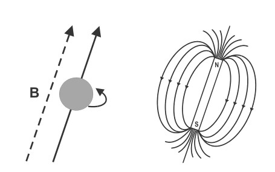A rigorous mathematical description of a nucleus with spin and its interactions requires us to dive deep into the realms of quantum mechanics, however most of MR can be described using concepts of classical mechanics.
Since a 1H, protium is the most prevalent isotope of the Hydrogen atom and since hydrogen consists of only one proton, MR concepts are usually described using the 1H atom. In the human body, there are millions of protons that produce a magnetic field of certain magnitude. However, the protons in our body are randomly oriented which causes the net magnetic moment of the human body to be zero.
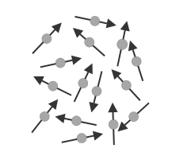When these protons are placed inside an external magnetic field, they begin to precess about the magnetic field. The protons are tilted slightly away from the axis of the magnetic field, yet the axis of rotation is parallel to \(B_o\). The movement of the proton is same as the toy named latoo.
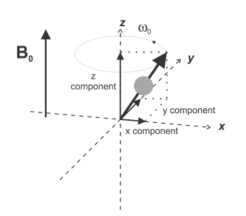By convention, the axis of the magnetic field and the axis of rotation are defined to be oriented in the \(z\) direction of a cartesian coordinate system. The motion of the proton can be described by a unique set of coordinates. The above figure represents the precession of a proton inside a magnetic field where the precessional axis is parallel to the magnetic field \(B_o\). The z-component of the spin vector does not change in magnitude or direction as the proton precesses, only the x and the y components vary with respect to time.
The frequency of precession is extremely important in MRI and is highly influenced by the strength \((B_o)\) of the external magnetic field. It is possible and necessary to precisely calculate the frequency of precession using the Larmour Equation.
\[ \omega_o = \gamma B_o \] where,\(\gamma\) is the Gyromagnetic ratio; \(42.5 MHz/T\) for proton
\(B_o\) is the magnitude of the external magnetic field in Tesla (T)
The spinning protons have charge as well as mass. The fact that the proton has mass means a spinning proton will posses a certain moment of inertia \((I)\), which resists the changes to its angular momentum \((\alpha)\). This inhibits the nucleus from aligning in the magnetic field. The inhibiting factor is referred to as the gyromagnetic ratio and is measured as the ratio of the magnetic moment to the moment of inertia. Its unit is \(MHz/T\). The gyromagnetic ratio is different for different materials; its value for proton is \(42.5MHz/T\).
The gyromagnetic ratio is fixed for each element which means the frequency of precession is also fixed for a given magnetic field strength. So in a uniform magnetic field, a nucleus of a given atom will rotate with exactly the same frequency and this frequency is known as the Larmour frequency.
The spin orientations are still randomly distributed in the direction perpendicular to the \(B_o\) as they were outside the magnetic field, in spite of the time varying nature of each transverse component. This means there is no net magnetization perpendicular to \(B_o\). However, in the direction parallel to the magnetic field, there is a constant and nonzero interaction (or coupling) between the proton and \(B_o\) which causes the protons to align either parallel or antiparallel with the external magnetic field. This is known as Zeeman interaction. This coupling causes a difference in energy between protons aligned parallel (along \(B_o\) and protons aligned antiparallel (against \(B_o\)). The protons oriented parallel to \(B_o\) is of lower energy than the protons aligned in antiparallel.
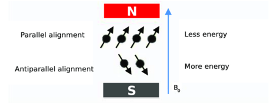For a collection of protons, more will be oriented parallel to \(B_o\) than antiparallel. In the absence of \(B_o\), there is no preferential alignment between orientations (left). In the presence of magnetic field (right), the spin up orientation is of lower energy and its configuration contains more protons than the higher energy spin down configuration. The difference in the energy \(\Delta E\) between the two levels is proportional to \(B_o\).
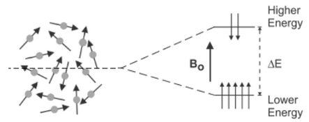So, for a set of protons, in the presence of external magnetic field, the precession would look something as follows:
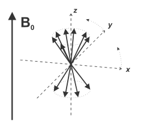Clearly, the precession vectors form two cones, one with a positive \(z\)-component and one with a negative \(z\)-component. Now, since there are more protons in the upper cone, there will be a non-zero vector sum which means a net magnetization of constant magnitude, \(M_o\) is produced. The orientation of this net magnetization is in the same direction as \(B_o\).
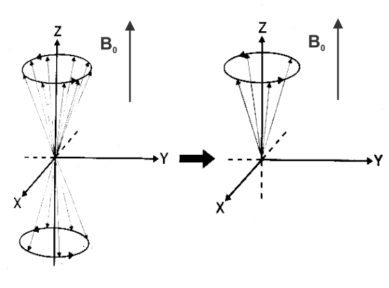Concepts of Magnetic Resonance
Magnetic Resonance
Nuclear MR or simply MR, in its most basic form is the transfer of energy between the precessing protons in the external magnetic field and an applied radio frequency pulse. For NMR to occur, the applied RF pulse must have exactly the same frequency as that of the precessing protons. When the frequencies are equal, the oscillation of particles hits peak and resonance occurs. The MR image is simply a frequency and phase map of the resonating protons at different points inside a strong, non-homogeneous magnetic fields.
Magnetic Field Inhomogeneity
There are three main causes for magnetic fields inhomogeneity:
- Main fields inhomogeneity: There is always some degree of non-uniformity to \(B_o\) due to imperfections in magnet manufacturing, composition of nearby building walls, or other sources of metal. This main field inhomogeneity is constant.
- Sample-induced inhomogeneity: The degree of magnetic polarization of adjacent tissues due to the differences in their magnetic susceptibility (e.g. bone, air) will distort the local magnetic field near the interface between different tissues. This inhomogeneity is constant and present as long as the sample/patient is inside the magnet.
- Imaging Gradients: In MRI, imaging gradients, which are essentially magnetic field gradients are used to obtain inhomogeneity. This inhomogeneity produced due to gradients is transient.
Magnetic Field Gradient
In MRI, the strength of the magnetic field is different at different points of the magnet. This is achieved through the application of magnetic field gradients. A magnetic field gradient is a small disturbance in the magnetic field strength with respect to position. This means that the exact magnetic field is linearly dependent on the location inside the magnet as related by the equation below:
\[B_i = B_o + G_T \otimes r_i\] where, \(B_i\) is the magnetic field at location \(r_i\) and \(G_T\) is a tensor that represents the total gradient amplitude. Note: if A is an \(m \times n\) matrix and B is a \(p \times q\) matrix, then the Kronecker product \(A \otimes B\) is a \(pm \times qn\) matrix.The gradients used in MRI produce linear variations primarily in one direction only, so the tensor product in the above equation can be reduced to a vector. The symbols for a magnetic field gradient in the x, y, and z directions are \(G_x, G_y,\) and \(G_z\). Now, if each of the regions of spin experiences a unique magnetic field, the Larmour equation needs to be modified as follows:
\[\omega_i = \gamma\,(B_o + G \cdot r_i) \]This equation tells us that each proton will resonate at a unique frequency that is relative to its position within the gradient field. The fact that each proton resonates at a different frequency makes it easier to image their positions. Furthermore, although each of these \(G_x, G_y\) and \(G_z\) are quintessential to obtain an image, they need to be eliminated as a source of proton dephasing during the \(T2\) relaxation. Proper design of the pulse sequence prevents these gradients from contributing in proton dephasing. A pulse sequence is the combination of excitation pulses (rf pulses), gradient pulses, data sampling periods and the timing between each of them.
Excitation Pulse
During MR process, the patient or sample is exposed to energy that will be absorbed. A short time later, this energy is re-emitted which can be then detected and processed. The entire field of MR is based on the manipulation of the net magnetization formed by the protons within a sample when placed inside an strong magnetic field. The simples manipulation involves the application of a short radio-frequency (rf) pulse. This pulse is also known as the excitation pulse, and contains many frequencies spread over a narrow bandwidth. As the excitation pulse is applied, the protons absorb a certain portion of this energy at a particular frequency. The frequency absorbed is proportional to the strength of the magnetic field \(B_o\) as related by the Larmour equation.
The rf pulse is applied with a central frequency \(\omega_o\) and an orientation perpendicular to the external magnetic field \(B_o\) , indicated by \(B_1\) in the figure down below.
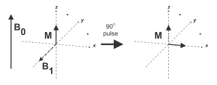This orientation difference allows a coupling between the rf pulse and \(M_o\) so that energy can be transferred to protons (In physics, two objects are said to be coupled when they are interacting with each other). Absorption of rf energy of frequency \(\omega_o\) causes \(M_o\) to rotate away from its equilibrium orientation. The direction of rotation of \(M_o\) is perpendicular to both \(B_o\) and \(B_1\). Now, if the rf pulse is applied for long enough at a high enough amplitude, the energy absorbed by the protons causes \(M_o\) to rotate entirely into the transverse plane by 90o. This pulse that rotates the net magnetization \(M_o\) by 90o is referred to as a 90o pulse.
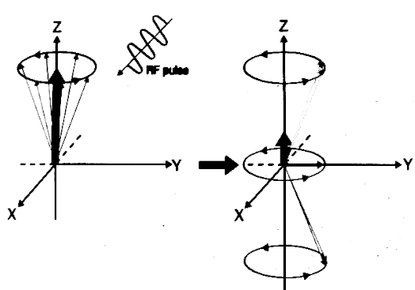As seen in the above figure, the net magnetization decreases in the longitudinal direction and increases in the transverse direction. The pulse amplitude or, more precisely, the pulse amplitude integral, determines the amount of rotation that the protons undergo (flip angle). In addition, the pulse amplitude is related to the amount of energy that the protons absorb and therefore must dissipate through (T1) relaxation.
Each rf pulse will have the following things defined:
- Amplitude
- Central frequency (resonant frequency of protons)
- Duration
- Shape/Envelope
- Phase
For a pulse to excite a particular frequency, that frequency must be included within its bandwidth. The duration and the shape of the pulse determine the bandwidth or range of frequencies on either side of the central frequency that are excited by the pulse. The phase of the pulse determines the axis of rotation for the net magnetization under the influence of the pulse.
Free Induction Decay
When the rf pulse is stopped, the protons immediately begin to realign themselves and return to their original orientation by emitting energy at frequency \(\omega_o\). As a result, the net magnetization will begin to precess about \(B_o\). If a loop of wire (a receiver coil) is placed perpendicular to the transverse plane, the protons induce a voltage in the wire during their precession. This induced voltage is the MR signal and is known as the FID. The magnitude of the FID signal depends on the value of \(M_o\) immediately prior to the \(90^o\) pulse. The FID signal decays with time as more of the protons give up their absorbed rf energy through a process known as relaxation.
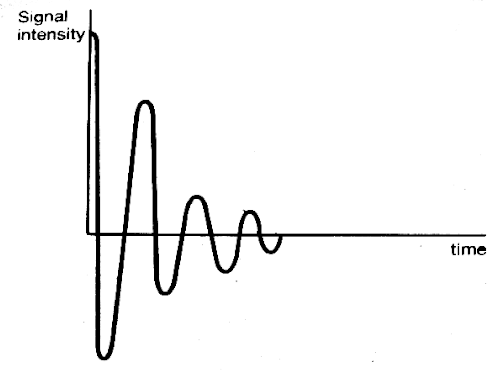The FID is maximum when a \(90^o\) pulse is used. If all the protons experience the same magnetic field \(B_o\), then only one frequency would be present in the FID. However, in reality, there are many magnetic fields through out the magnet, which is referred to as inherent magnetic field inhomogeneity. Due to this inherent magnetic inhomogeneity, many MR signals at many frequencies are produced. These signals are superimposed so that the FID contains many frequencies varying as a function of time. (It is easier to examine such a multi-component signal in terms of frequencies rather than of time so the signal amplitudes are converted from a function of time to a function of frequency using Fourier transformation.)
Relaxation
Relaxation is the process by which protons release the energy that they absorbed from the rf pulse. Relaxation is a fundamental process in MR, and is just as essential as the energy absorption. Relaxation provides the primary mechanism for image contrast.
In resonance absorption, rf energy is absorbed by protons only when their frequencies match. The absorbed energy disturbs the equilibrium parallel and anti-parallel orientation of protons to the external magnetic field. Shortly after excitation, relaxation occurs in which the protons release the additional energy that they absorbed and return to their equilibrium configuration. Although individual protons absorb energy, relaxation times are measured for an entire sample and are statistical measurements. Two distinct relaxation times can be measured, known as \(T1\) and \(T2\) relaxation times.
T1 Relaxation
T1 relaxation time is time required for the \(z\)-component of the net magnetization \(M_o\) to return to \(63\%\) of its original value following an excitation pulse. It is also known as spin-lattice relaxation time or longitudinal relaxation time.
We know that the net-magnetization \(M_o\) is parallel to \(B_o\) at equilibrium. When rf-pulse is broadcast, the protons will absorb energy which inturn will rotate \(M_o\) into the transverse plane. \(T1\) relaxation provides the mechanism by which the protons give up their energy to return to their original orientation. If a \(90^o\) pulse is broadcast to the sample, \(M_o\) will rotate full \(90^o\) such that there will be no longitudinal magnetization present following the pulse. As time goes on, the longitudinal magnetization will return as the protons release their energy through \(T_1\) relaxation. Gradually, as more protons release their energy, a ranger fraction of \(M_z\) is re-established. The change of \(M_z/M_o\) with time \(\tau\) follows an exponential growth process as shown in the figure down below:
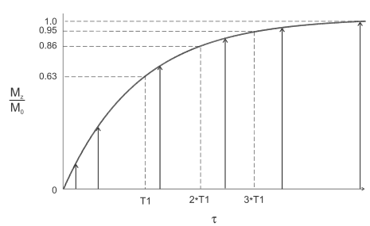As seen in the figure above, the return of longitudinal magnetization follows an exponential growth process, with \(T1\) being the time constant describing the rate of growth as illustrated by the equation down below:
\[ M(\tau) = M_o (1 - e^{-\tau/T1}) \] where,\(T1\) is the time constant, and is the time when \(M_z\) has returned to \(63\%\) of its original value.
After three \(T1\) time periods, \(M_z\) will have returned to \(95\%\) of its value prior to excitation pulse i.e. \(M_o\). The excited proton (spin) transfers its energy to its surroundings (lattice) rather than to another spin and for this reason this \(T1\) relaxation is also called spin lattice relaxation.
Now, suppose the rf energy is continuously applied at the resonant frequency so that no relaxation occurs. The protons in the lower energy level absorb the rf energy, and the protons in the upper energy level are stimulated to emit their energy. Since energy is continuously transmitted, the proton populations of the two levels will gradually equalize. When this equalization occurs, no further net absorption of energy is possible, a condition known as saturation. The \(M\) will rotate continuously but gradually get smaller in magnitude until it disappears as the net population difference approaches zero. Since there is no net magnetization, there will be no coherence of proton motion in the transverse plane and thus no signal will be produced. Therefore, there is only a limited amount of energy that a collection of protons can absorb before they become saturated.
In a modern MR, pulsed rf energy is applied to the protons repeatedly with a delay time between the pulses. This time between pulses allows the excited protons to relax (give up the absorbed energy). As the protons give up the energy to their surrounding, the population difference (spin up vs spin down) is re-established. As \(M\) is the ultimate source of the MR signal, the more that is dissipated, the more signal that will be generated following the next rf pulse. The time between successive rf pulses is usually insufficient for complete \(T1\) relaxation due to which \(M\) will not be completely restored to \(M_o\). However, the application of the second rf pulse prior to the complete relaxation will rotate \(M\) into the transverse plane with a smaller magnitude than the previous rf pulse. The following describes this situation.
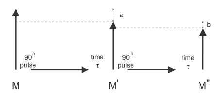- Application of a \(90^o\) pulse rotates M into the transverse plane.
- Elapsed time \(\tau\) is insufficient for complete \(T1\) relaxation due to which the longitudinal magnetization, \(M^{'}\) at the end of \(\tau\) is less than \(M\). The difference between \(M\) and \(M^{'}\) is \(a\).
- A second \(90^o\) rf pulse rotates \(M^{'}\) into the transverse plane.
- As \(\tau\) time elapses, a longitudinal magnetization \(M^{''}\) is produced. The difference between \(M^{'}\) and \(M^{''}\) is \(b\) and is smaller than \(a\).
- Strength of the external magnetic field \(B_o\). Larger the value of \(B_o\), larger the value of \(M\).
- Proton density i.e. the number of protons producing the \(M\).
- The amount of energy absorbed by protons.
- The duration between two successive rf pulses i.e. \(\tau\).
- The efficiency of protons in giving up their energy i.e. \(T1\).
This steady state of \(M\) must be achieved prior to data collection, therefore additional rf pulses known as dummy pulses must be applied immediately prior to the main imaging pulses.
T1 is different for different tissues this is because H atom is tighter in H than in Water.
T2 Relaxation
The \(T2\) relaxation time is the time required for the transverse component of \(M\) to decay to \(37\%\) of its initial value. The \(T2\) relaxation is also known as the spin-spin relaxation or transverse relaxation time.
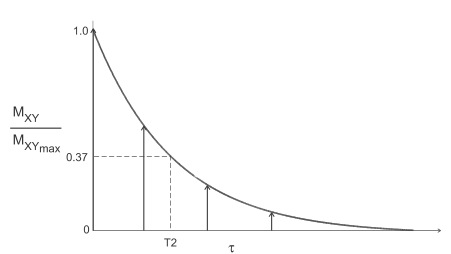The plot above shows the \(M_{xy}\) component as a function of time. The change in \(M_{xy}/M_{xy_{max}}\) with time follows an exponential decay process. The time constant for this process is the spin-spin relaxation time \(T2\) and is the time when \(M_{xy}\) has decayed to \(37\%\) of its original value. The \(T2\) relaxation rate is also different for different tissues.
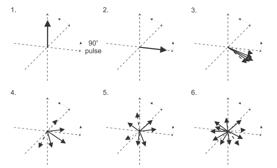At equilibrium, \(M_o\) is parallel to \(B_o\) and no portion of \(M_o\) is the \(xy\)-plane and the coherence is entirely longitudinal (1). Absorption of energy from a \(90^o\) rf pulse causes \(M_o\) to rotate entirely into the \(xy\)-plane, so that the coherence is in the transverse plane (2). Following the \(90^o\) rf pulse, when the protons have absorbed energy and are oriented in the transverse plane, each proton precesses in phase at the same frequency (3). However, due to the spin-spin relaxation and inherent magnetic inhomogeneity, the protons begin to precess at different frequencies and get out of phase (4,5). As more time elapses, the transverse coherence becomes smaller (as protons release their energy and reoreint themselves parallel to \(B_0\)) until there is complete randomness of the transverse components and no coherence (6). This process of getting from total in-phase situation to total out-of-phase situation is called \(T2\) relaxation. This dephasing time \(T2\) is always less than or equal to \(T1\) relaxation time.
Since a nearby proton of the same type will have the same molecular environment and the same \(\omega_o\) , it can readily absorb the energy that is being transferred from an excited proton. As a result, the absorbed energy remains as spin excitation rather than being transferred to the lattice as in \(T1\) relaxation.
As seen in figure (a), two mater molecules are in close proximity; one spin on one molecule has absorbed rf energy and is excited (spin down). Since two water molecules are in close proximity, the energy from one molecule can be transferred to a spin on the second molecule as seen in figure (b).
T2* Relaxation
Along with the spin-spin relaxation, the inherent magnetic inhomogeneity also contributes to the protons getting out-of-phase. Main-field inhomogeneity and the sample-induced inhomogeneity are two factors that contribute to the total transverse relaxation time \(T2^*\) as related by the following equation:
\[ 1/T2^* = 1/T2 + 1/T2_M + 1/T2_{SD} \] where,\(T2_M\) is the dephasing time due to the main field inhomogeneity
\(T2_{SD}\) is the dephasing time due to magnetic susceptibility differences.
For most tissues \(T2_M\) is the major factor in determining \(T2^*\), whereas for tissues with air filled cavities, \(T2_{SD}\) predominates \(T2^*\). So, the decay of the transverse magnetization following a 90° rf pulse, follows an exponential process with the time constant of T2* rather than just T2:
\[ M_{xy}(\tau) = M_{xy_{max}} e^{(-\tau/T2^*)} \]The main field inhomogeneity and magnetic susceptibility differences which contribute to the dephasing of protons can be reversed by applying a \(180^o\) rf pulse after a short delay of time \(\tau\) following the \(90^o\) pulse. The initial \(90^o\) pulse rotates \(M_o\) into the transverse plane. During time \(\tau\), proton dephasing occurs through \(T2^*\) relaxation process and the transverse coherence will diminish as explained above. Application of a \(180^o\) pulse causes the protons to reverse their phases relative to their resonant frequency. The rate of precession does not change, only the relative phase changes. As time \(\tau\) elapses following the \(180^0\) pulse, the protons will regain their transverse coherence. This reformation of phase coherence induces another signal known as the spin echo. Moreover, the contributions to \(T2^*\) relaxation from the static main field inhomogeneity and susceptibility differences will disappear but the spin-spin relaxation remains unaffected by the \(180^o\) pulse. This means that the loss of transverse coherence and signal amplitude for a spin echo is due to true \(T2\) relaxation.
Difference between T2 and T2* Relaxation
One important difference between \(T2\) and \(T2^*\) relaxation is
the influence of \(B_o\). \(T2\) is insensitive to very high values of
\(B_o\); only at very low values of \(B_o\), less than \(0.5T\) will
there be significant changes in \(T2\). But other components of \(T2^*\)
i.e. \(T2_M\) and \(T2_{SD}\) become more prominent at higher
\(B_o\). Uniformity is more difficult to achieve in high magnetic fields
due to which \(T2_M\) is shorter. In addition, greater \(B_o\) will also
cause greater difference in the \(M_o\) between two tissues with
different magnetic susceptibilities, producing shorter \(T2_{SD}\). As
a result \(T2\)-weighted techniques are insensitive to \(B_o\) whereas
the
\(T2^*\)-weighted techniques will show greater signal
differences at higher \(B_o\).
Imaging Cycle
The image acquisition process consists of an imaging cycle which inturn is comprised of two distinct phases. One phase is associated with the longitudinal magnetization and the other phase is associated with the transverse magnetization. The duration of these two phases are determined by two factors: repetition time TR and echo time TE. Along with TR and TE some additional concepts needed to understand the image cycle are described below:
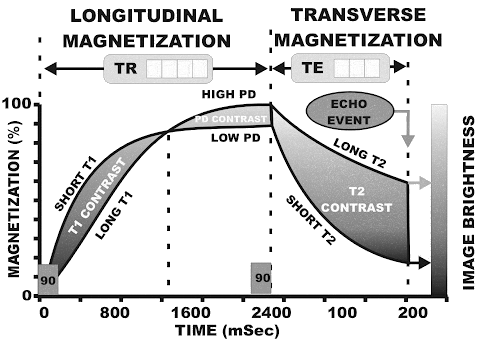- Saturation
- In the beginning of each imaging cycle, the longitudinal magnetization is reduced to zero (saturation) by an RF pulse, and then allowed to regrow, or relax. This is what happens in the spin echo method. In some other imaging methods, the cycle might begin with either partially saturated or inverted longitudinal magnetization.
- Excitation
- Excitation is the transition from the longitudinal magnetization phase to the transverse magnetization phase; it is called excitation because transverse magnetization is a lot more unstable or excited than longitudinal magnetization. An excitation process is characterized by a flip angle. A \(90^o\) rf pulse converts all of the existing longitudinal magnetization into transverse magnetization. Flip angles less than \(90^o\) converts only a proportion of the longitudinal magnetization into transverse magnetization.
- Echo Event
- The transverse magnetization phase terminates with the echo event, which involves echoing an RF signal. This signal is emitted by tissues and used to form the image.
- Repetition Time (TR)
- As seen in the figure above, repetition time, TR, is the interval between successive excitation pulses. It is the time between the start of longitudinal relaxation (regrowth) following saturation, and the time at which the longitudinal magnetization is converted to transverse magnetization through excitation.
- Echo Time (TE)
- Echo time, TE, is the interval between the beginning of transverse relaxation following excitation when the magnetization is measured to produce image contrast (echo event).
Contrast Sensitivity
The MR imaging process is one of creating contrast among tissues based on their magnetic characteristics. The primary characteristics are proton density (PD), T1, and T2. MRI is a dynamic process in which the magnetization levels of various tissues are undergoing almost constant change. During each imaging cycle there are two distinct magnetization phases: longitudinal and transverse. Different types of contrast are developed in each of these phases depending on tissue characteristics and selected parameters.
Tissues characteristics opt for three different contrasts PD, T1 and T2. The imaging process can be adjusted so that it has max or at least adequate contrast sensitivity for a specific characteristic. The image produced is heavily weighted by a specific characteristic (for which the imaging process has been adjusted). There are different factors depending on the imaging method that determine the contrast sensitivity of the resulting image but TR and TE in general are used to control contrast sensitivity.
- T1 Contrast
- After application of a saturation pulse, which reduces the longitudinal magnetization to zero, the magnetization begins to regrow, a process known as T1 relaxation. The rate of regrowth for a specific tissue is determined by that tissue’s T1 value. During this regrowth, T1 contrast in the form of different levels of magnetization is created among the tissues.
- During T1 relaxation, i.e. during the regrowth of longitudinal magnetization, different tissues will have different levels of magnetization as growth rates (T1 values) for different tissues will be different. The figure above depicts the longitudinal relaxation for two different tissues with different T1 values.
- The tissue with shorter T1 value experiences a faster regrowth of longitudinal magnetization which means it will produce a more intense signal that appears brighter in the image. In principle, at the beginning of each imaging cycle all tissues are dark. As tissues regain longitudinal magnetization, they are rendered bright. The intensity of brightness that appears on the depends on the duration of the regrowth process, which in turn is determined by the selected TR value. When a short TR is used, the regrowth of the longitudinal magnetization is interrupted before it reaches its maximum; this reduces signal intensity and tissue brightness but produces T1-contrast. The selection of a longer TR produces greater signal strength but less T1 contrast. To produce a T1-weighted image, the value for TR must be rather short so that the T1 contrast is significant between two tissues. Nonetheless, the selection of TR must be appropriate for the T1 values of the tissues being imaged.
- Proton Density Contrast (PD Contrast) 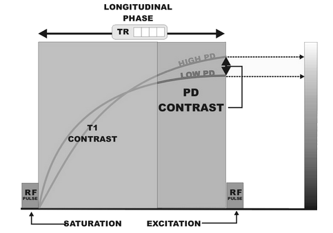
- The concentration of protons in each tissue determines the maximum level of magnetization that can be obtained. Differences in the PD among tissues with the same T1 values can be used to produce image contrast. as shown in the figure above. The tissue with the lower PD reaches a maximum magnetization level that is lower than that of the other tissue. The difference in magnetization levels at any point in time is because of the difference in PD and is therefore the source of PD contrast.
- The basic difference between T1 contrast and PD contrast is that T1 contrast is produced by the rate of growth (relaxation), and PD contrast is produced by the maximum level to which the magnetization grows. In general, T1 contrast predominates in the early part of the relaxation phase, and PD contrast predominates in the later portion. T1 contrast gradually gives way to PD contrast as magnetization approaches the maximum value. A PD-weighted image is produced by selecting a relatively long TR value so that the image is created in the later portion of the relaxation phase, where tissue magnetizations approach their maximum values. The TR values at which this occurs depend on the T1 values of the tissues being imaged. TR value that is at least three times the T1 values for the tissues being imaged produces almost pure PD contrast.
- T2 Contrast
- When an RF pulse is applied to longitudinal magnetization, it converts (flips) it to transverse magnetization, an unstable excited magnetic condition that decays with time. This decay process is known as the T2 relaxation. The rate of decay of a specific tissue depends on that tissue’s T2 value.
- During the decay of transverse magnetization, different tissues will have different levels of magnetization because of different decay rates, or T2 values. As depicted in the figure above, tissues with larger T2 value will have a relatively higher level of magnetization as compared to tissues with smaller T2 values. As a result, tissues with larger T2 values produce a more intense signal and appear brighter in the image. This difference in T2 values is translated into T2 contrast.
- The transverse relaxation of the two tissues begins with the levels of magnetization determined by the PD. This means the PD contrast at the end of the longitudinal phase carries over to the beginning of the transverse phase. In effect, the transverse phase begins with PD contrast but adds T2 contrast as time elapses. As seen in the figure above, there is no T2 contrast at the beginning but it develops and increases throughout the T2 relaxation (shrink). At the echo event the magnetization levels are converted into RF signals that are displayed as pixels. The time interval between the beginning of the transverse phase and the echo event is called TE. Maximum T2 contrast is obtained by using a long TE, however, when a very long TE value is used, the level of magnetization thence the strength of the RF signals might be too low to form a useful image. Therefore, in selecting TE values, a compromise must be made between T2 contrast and good signal intensity.
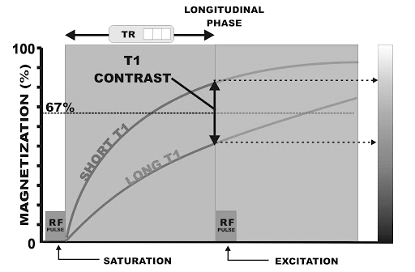
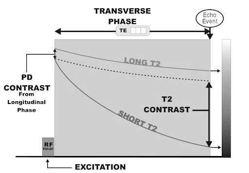
Altogether, the transverse magnetization of tissue (T2 values) are added to the longitudinal characteristics carried over from the longitudinal phase (T1 and PD) to form the MR image. In normal use cases, T2 contrast is not added to T1 contrast because these two types of contrast oppose each other. When producing a T2-weighted image, it is necessary to use a long TR so that minimum T1 contrast over to the transverse phase.
- Short TR: T1 weighted image
- Long TR, Long TE: T2 weighted image
- Long TR, Short TE: PD weighted image
Signal Acquisition
During the relaxation processes, the spins give up their excess energy in the form of rf waves and to produce an image we need to pick up these waves before they disappear into space.
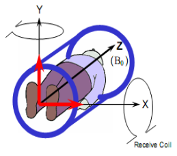In order to pick up these rf waves, receiver coils are used. The MR signals emitted by the tissues are received by the RF coils (gradient coils) placed perpendicular to the external magnetic field. MR signals are always detected in presence of a gradient known as the readout gradient \(G_{RO}\). Following excitation, the net magnetization within the slice is oriented transverse to \(B_o\) and will precess with frequency \(\omega_o\). The T2\(^*\) processes induces dephasing of the transverse magnetization which can be partially reversed to form an echo. As the echo is forming, the readout gradient is applied perpendicular to the slice direction. Under the influence of this new gradient field, the protons begin to precess at different frequencies depending on their position within it. Thereby the echo signals measured by the receiver coil has distinctive frequency and phase characteristic so that they can be separated from other signals during image reconstruction. The magnitude of \(G_{RO}\) and the frequency that is detected enable the corresponding position of proton to be determined.
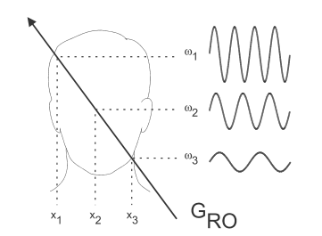Following excitation, each proton within the excited volume (slice) precesses at the same frequency. During detection of the echo, the \(G_{RO}\) is applied, causing a variation in the frequencies for the protons generating the echo signal. The frequency of precession \(\omega_i\) for each proton depends upon its position \(x_i\). frequencies measured form the echo are mapped to the corresponding position.
One thing to note is that, these MR signals are only received during the \(T2\) relaxation. Now since, \(T2\) is a decaying process, the strength of the signal received is strong in the beginning and gradually becomes weaker.
Slice Selection
The initial step after the echo event is the localization of the rf excitation to a region of space. Meaning, the MR signal received as a result of echo event needs to be traced to a point from which it is being broadcast. There are two distinct methods used to create the individual slices.
- The method of frequency selective excitation, which creates a slice during the acquisition phase.
- Alternative to frequency selective excitation is to acquire signals from a large volume of tissues like an organ and then create slices during reconstruction process.
These are referred to as 2D volume and 3D volume acquisition. Slice selection, in either case, is done by applying a gradient, known as the slice selection gradient, \(G_{ss}\). The gradient direction determines the slice orientation, whereas the steepness of the slope of the gradient together with the bandwidth of frequencies incorporated into the \(90^o\) rf pulse determines the slice thickness and slice position. Thinner slices require larger \(G_{ss}\) steep.
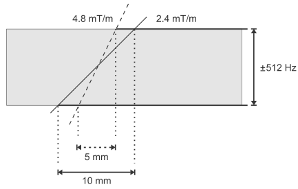The figure above depicts that for a given bandwidth of frequencies incorporated into the rf pulse, the desired slice thickness is determined by the amplitude of the slice selection gradient. A \(G_{ss}\) of \(4.8\,mT/m\) produces a slice thickness of 5mm and a \(G_{ss}\) of \(2.4\,mT/m\) produces a slice thickness of 10mm for frequencies ranging from -512 Hz to +512 Hz.
Normally, the bandwidth is fixed and the slice thickness is changed by modifying the amplitude of \(G_{ss}\) as illustrated in the figure down below.
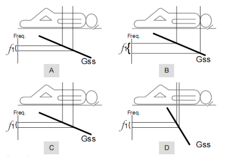Keeping the bandwidth fixed will allow the RF pulses to excite tissues in a specific site.
Nonetheless, multi-slice imaging uses the same \(G_{ss}\) but a unique rf pulse during excitation. Each rf pulse has the same bandwidth but a different central frequency, thereby exciting a different region of tissue.Signal Encoding
The MR image formation process subdivides a section of the patient's body into a set of slices and then each slice is cut into rows and columns to form a matrix of individual tissue voxels. This is achieved by encoding signals during the acquisition phase and then, in effect, delivering the signal intensities to the appropriate pixels which have addresses within the image during the reconstruction phase. Now, since there are two dimension in an image, two different method of encoding must be used. The two methods of signal encoding are:- Frequency Encoding
- Phase Encoding
Frequency Encoding
A fundamental characteristic of an RF signal is its frequency. Frequency is the number of cycles per second of an oscillating signal. The picture below presents the concept of RF signal produced by voxels of tissues:
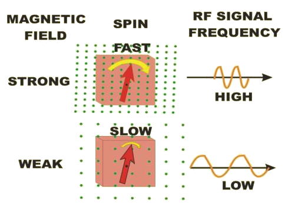Tissues produce MR signals only when transverse magnetization is present. The unique characteristic of transverse magnetization that produces the signal is a spinning magnetic effect. The transverse magnetization spins in and out of phase around the axis of the magnetic field. A spinning magnet or magnetization in the vicinity of a coil generates electricity in the coil. When imaging protons the strength of the magnetic field is the factor used to vary the resonant frequency and the corresponding frequency of the RF signals. This is illustrated in the figure down below:

In this example, the magnetic field strength is increased from left to right. This means each voxel is located in a different field strength and is resonating at a frequency different from all others. The frequency-encoding gradient is present at the time of the echo event when the signals are actually being produced. This frequency-encoding gradient is also know as readout gradient, \(G_{RO}\).
Phase Encoding
The principle of phase encoding is based on the fact that the proton precession is periodic in nature. Prior to the application of the phase encoding gradient, \(G_{PE}\), a proton within a slice precesses at the base frequency \(\omega_o\). In the presence of \(G_{PE}\), it precessional frequency increases or decreases. Once \(G_{PE}\) is turned off, the proton precession returns to its original frequency, but is either ahead or behind in phase relative to its previous state. The picture down below illustrates this:
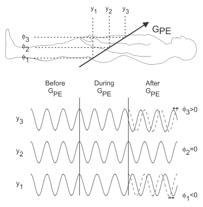As seen in the figure above, prior to the application of \(G_{PE}\), all protons precess at the same frequency. When \(G_{PE}\) is applied, a proton increases or decreases it precessional frequency, depending on its position \(y\). A proton located at \(y_i = 0\) experiences no effect from \(G_{PE}\). Once \(G_{PE}\) is turned off, the protons precess at their original frequency but experience a phase shift as indicated by the dashed curve. This sort of phase shift causes the spin-rate of the transverse magnetization of one voxel to differ from that of another voxel.
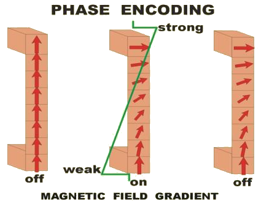Here, all voxels have the same amount of transverse magnetization that is spinning in-phase at the time prior to the application of \(G_{PE}\). When the \(G_{PE}\) is turned on, the strength of the magnetic field increases from bottom to top. Therefore, the magnetization in each voxel is spinning at a different rate with the increasing magnetic field strength from bottom to top. This causes the magnetization from voxel to voxel to get out of phase which produces a phase shift (or phase difference). The amount of induced phase shift depends on the magnitude and duration of \(G_{PE}\) as well as the position of the proton. The \(G_{PE}\) remains on only for a short period of time and then is quickly turned off. As a result, the signals from individual voxels are different in terms of their phase relationship; which technically means the signals are phase encoded. All of the signals are emitted at the same time and mixed together as composite echo signal. Later, the reconstruction process will sort the individual signal components. Phase encoding is done before frequency encoding.
For each imaging cycle, the phase-encoding gradient is stepped to a slightly different value. The signals acquired with a different phase-encoding strength fills one row of k space. This is a very important point that should be emphasized: Each row of k space is reserved for signals with a specific degree of phase encoding gradient. The degree of phase-encoding gradient is determined by the strength and duration of the gradient during each cycle. The phase encoding process is repeated depending on the size of k space and that is determined by the image matrix size.
Gradients in MRI
Various gradients are turned on and off at specific times in each imaging cycle. The three gradient activities are:
-
The slice selection gradient is on when rf pulses are applied to the tissue. The \(G_{ss}\) limits magnetic excitation, inversion and echo formation to the tissue located within a specific slice.
-
The phase-encoding gradient is turned on for a short period in each cycle to produce a phase difference in one dimension of the image.
-
The frequency-encoding gradient is turned on during the echo event when the signals are actually emitted by the tissue. This causes different voxels to emit signals with different frequencies.
Raw Data and k-Space
Raw data is stored and manipulated as a grid or matrix of points. The grid contains data measured for a given echo, from a given slice or volume of tissue i.e. the matrix represents a slice. Each amplitude of each echo signal is measured by the receiver coil and is first digitized as a function of time and then converted into a complex format. This digital form of the signal is stored as complex data with each signal point represented by real and imaginary values. The detected signal amplitude for a given echo, corresponds to a row and each row differs by the value of \(G_{PE}\) applied prior to detection. This raw data matrix is referred to as the \(k\)-space. The \(k\)-space is a grid of points with frequency-encoding direction displayed horizontally and the phase-encoding direction displayed vertically. Its dimension depends on the number of readout data points and the number of phase encoding steps. All the information necessary to construct the image is contained within the \(k\)-space, given that all the rows of k space must be filled with data before the image construction can be performed. The image is obtained via 2D Fourier transformation of the \(k\)-space.
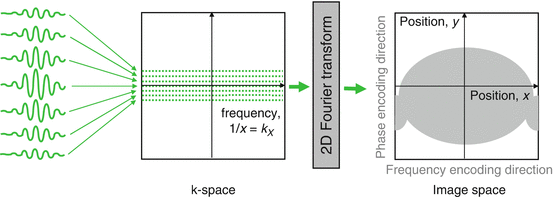The complex array of raw data points in the k-space are treated as a two dimensional grid of points \((k_x,k_y)\) where \(k_x\) corresponds to a different time point in the readout (frequency encoding) direction and each \(k_y\) value corresponds to a different phase-encoding gradient amplitude. Each \((k_x,k_y)\) data point corresponds to the echo signal amplitude influenced by the combination of frequency-encoding and phase-encoding gradients. The total gradient influence at each \((k_x,k_y)\) point in the matrix is different and unique. The point \((0,0)\) is the origin of the k-space, and has the maximum amplitude in the raw data matrix. The contrast of the image is primarily determined by data at the center, where as edge definition is primarily determined by data at the edges of k-space.
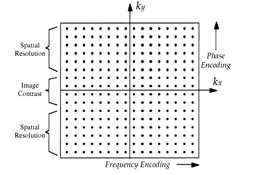The following illustration makes this concept a bit more clear:
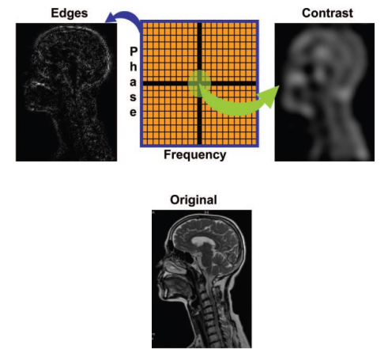As seen in each of the pictures above, the k-space is divided into four equal quarters by the \(x\) and the \(y\) axis.
Image Construction
Some folks call this image reconstruction, but the image was never constructed so it is not reconstruction rather jut construction.
The next step in the creation of an MR image is the reconstruction process. reconstruction is the mathematical process performed by the computer that converts the collected signals in k space into an actual image. There are several reconstruction methods, but the one used for most clinical applications is the 2D Fourier transformation. The Fourier transformation sorts a composite signal into individual frequency and phase components. Since each voxel in a row emits a different signal frequency and each voxel in a column a different phase, the Fourier transformation can determine the location of each signal component and direct it to the corresponding pixel.
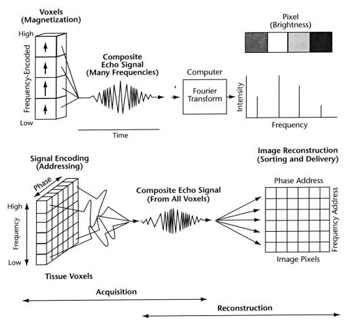In the above picture, we can see that (bottom right), each column of pixels has a phase address and each row of pixel has a frequency address. Therefore each individual pixel has a unique address that consists of a combination of frequency and phase values. The frequency and phase encoding process during
Image Acquisition Summary
This whole image acquisition process in analogous to mail delivery; where a mail needs to be posted, collected and then delivered to a specific house in a specific street. The echo event is analogous to someone posting a mail in a post box. The \(G_{SS}\) is similar to the P.O. box number. In the image, each column of pixels has a phase address corresponding to a street name and each row of pixels has a frequency address corresponding to a house number in that street. Therefore, each individual pixel has a unique address consisting of a combination of frequency and phase values analogous to a street name and a house number. The frequency-encoding and the phase-encoding process during acquisition "writes" an address on the signal from each voxel. These signals are mixed together and collected in a post-office called k space. The signals (mails) are then sorted by the Fourier transform process and hopefully delivered to the correct pixel address in the image.
Pulse Sequence
A pulse sequence is the measurement technique by which an MR image is obtained.
Spin Echo Pulse Sequence
Spin echo pulse sequence is commonly used in MR imaging. It has at least two rf pulses, an excitation pulse and one or more 180\(^o\) pulses that generate the spin echoes. Spin echo pulse sequence also utilizes gradient pulses in the readout and slice selection directions. In a spin echo sequence, the repetition time \( TR\) is the time between successive excitation pulses for a given slice and the echo time \( TE\) is the time from the excitation pulse to the echo event.
MRI Artifacts
MRI is extremely sensitive to temporal and spatial differences in the sample induced magnetic field, which gives rise to a variety of artifacts.Motion related artifacts: Ghosting and Smearing. When motion is periodic the result is complete or incomplete replication of the moving tissue which is referred to as ghosting, and is observed along the phase encoding direction of the image. The causes of motion artifacts are as follows:
- Esophageal contraction
- Respiration
- Cardiac activity
- Bowel peristalsis
- Other voluntary motions
A wide variety of techniques can be employed to minimize motion artifacts. Swapping the phase and the frequency encoding direction is a common measure. Some other remedies are ECG gating, pre saturation, gradient moment nulling, fat suppression, and multiple signal averaging.
Susceptibility artifacts: These arise due to the differences in magnetic susceptibility of tissues and are usually seen around metal implants, and at air-tissue and air-bone interfaces. Susceptibility artifacts get worse with long TE and gradient echo pulse sequences.
Susceptibility artifacts can be reduced by performing the imaging at low magnetic field strengths, using smaller voxels, decreasing the TE time period and increasing the receiver bandwidth.
-
Wrap around artifact is another type of artifact seen in MRI imaging. It occurs when the dimensions of a part of the imaged anatomy in phase encoding direction (vertical axis) exceeds the FOV.
-
Truncation or Gibbs artifact are bright or dark lines seen parallel and adjacent to borders of abrupt intensity change. It is caused by incomplete digitization of the echo or insufficient samples of data.
Zipper artifact resulting from the contamination of the MR scanner environment by spurious RF signal.
Cross talk or Cross contamination artifact caused due to the interference between slices due to imperfect slice profiles.
Clipping artifact
Chemical shift artifact
Some definitions to remember
-
Flip angle:
FA is the degree of rotation of the net magnetization towards the transverse plane. In gradient-echo pulse sequences, the FA ranges from 1 to 90\(^o\) and in spin echo pulse sequences, the FA is greater than 90\(^o\)
-
Inversion Time
It is the duration of time between the inversion pulse and the excitation pulse. The inversion time is responsible for selective suppression of signals.
-
Number of Acquisition (NA)
NA is also know as the number of excitation or number of signal averaging. It determines how many times a scan is repeated. Higher NAs has less noise and therefore high SNR, fewer artifacts but the scan time increases as NAs is increased.
-
Matrix Size
Matrix size determines the spatial resolution of the image. It has two side MX\(_{PE}\) and MX\(_{RO}\). The matrix size can be increased or decreased in steps of 32.
-
Field of View (FOV)
FOV determines how much of the anatomical region will be imaged. Increasing the FOV will result in lower spatial resolution.
-
Slice Gap
Slice gap is the amount of space between slices and is expressed in percentage of the slice thickness. In contiguous slices, there is overlapping of signals which is referred to as crosstalk. Slice gap of 10-20% is usually used to reduce crosstalk.
Resolution, Spatial Resolution and Temporal Resolution
Resolution is the PPI in an image
and spatial resolution is the ability of an imaging modality to differentiate two adjacent structures as being distinct from one another.
Temporal resolution refers to the duration of time for acquisition of a single frame of image.